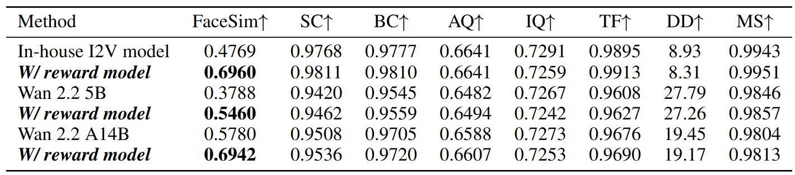

We study the problem of generating intermediate images from image pairs with large motion while maintaining semantic consistency. Due to the large motion, the intermediate semantic information may be absent in input images. Existing methods either limit to small motion or focus on topologically similar objects, leading to artifacts and inconsistency in the interpolation results. To overcome this challenge, we dig into the pre-trained image diffusion models for their capabilities in semantic representations and generations, which ensures consistent expression of the absent intermediate semantic representations with the input. To this end, we propose DreamMover, a novel image interpolation framework with three main components: 1) A natural flow estimator based on the diffusion model that can implicitly reason about the semantic correspondence between two images. 2) To avoid loss of detailed information during fusion, our key insight is to fuse information in two parts, high-level space and low-level space. 3) To enhance the consistency between the generated images and input, we propose the self-attention concatenation and replacement approach. Lastly, we present a challenging benchmark dataset called InterpBench to evaluate the semantic consistency of generated results. Extensive experiments demonstrate the effectiveness of our method. Code will be released soon.
Method
Overview of our method. (A) IPRO predicts \(\bar{x}_0\) from the noise input \(x_T\) , and the prediction
is visualized through a frozen VAE decoder and scored by a face reward model with our
facial scoring mechanism (C). This reward signal is used to update the trainable parts of the model,
thereby steering the generation process to produce videos with consistent identity. (B) We further
incorporate a KL-divergence regularization to alleviate reward hacking.
Experiments

Quantitative comparisons. Our method achieves more consistent face similarity than its
baseline, without compromising its performance on other dimensions, including Subject Consistency
(SC), Background Consistency (BC), Aesthetic Quality (AQ), Imaging Quality (IQ), Time
Flickering (TF), Dynamic Degree (DD), and Motion Smoothness (MS).